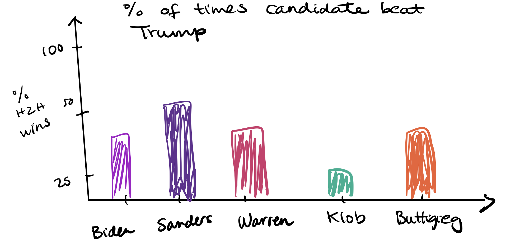
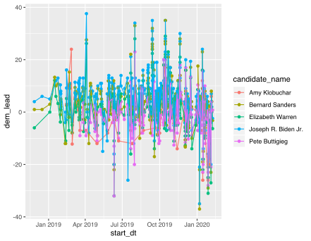
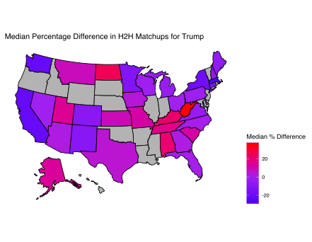

1. Do general election favorability ratings tend to follow primary elections?
This is not an exact comparison, since this data matches Democratic candidates against Trump, but it may inform us if support for a particular candidate might carry into the general election. For instance, we can look at Iowa and New Hampshire and people's polling preferences, compared to the known outcomes of the primaries. We know that Iowa finished with essentially Buttigieg and Sanders tying for first place, and Sanders won New Hampshire with Buttigieg in second.
Sketch 2: This map chart would display the difference between January 2020's average % favorability compared to January 2019's favorability. A negative value means that favorability was higher in 2019, while a positive value means that favorability was higher in 2020.

2. Which Democratic candidates are the "most polarizing"?
We can plot the top 5 current Democratic candidates by their polling history in terms of the difference in head-to-head percentages against Trump.
It looks like Pete Buttigieg and Joe Biden have the highest "variability" in terms of the head-to-head percentage point differences.
Sketch 2: We could also drill down by pollster to look at the "variability" of each candidate over the last year:
3. How many times are candidates generally polled?
We find that Biden has the highest # of polling questions at 323. Sanders has 296, Elizabeth Warren has 288, Pete Buttigieg has 174 and Kamala Harris has 150. These candidates have been in the race for the longest (although Harris has already dropped out), so this is not surprising. Amy Klobuchar, surprisingly, is only mentioned in 34 polling questions. We assume this is because she didn't have the name recognition of her peers until recently.4. Do Democratic debates change poll opinions among Americans? FiveThirtyEight has provided opinion poll data that can be used to compare favorability of different potential presidential candidates. For the purposes of this analysis, we decide to look at only the top 5 Democratic candidates (Biden, Sanders, Warren, Buttigieg, and Klobuchar) and current president Donald Trump. In particular, we are interested if voters' opinions on who they would vote for can be influenced by debate performances, or if they tend to remain relatively stable regardless of debates. We focus on the last five Democratic primary debates.
5. Where does Trump do extremely well in terms of voter preferences? We probably already have some idea, but a visualization can help us in figuring this out: 
Sketch 2: This would allow the user to choose the state and Democratic candidate, and then show head-to-head general election performance over time.